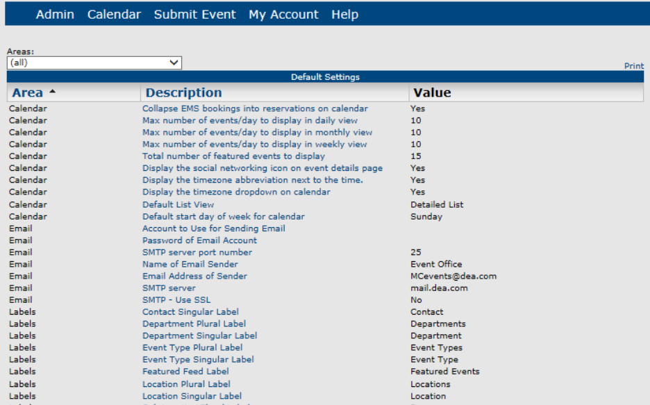
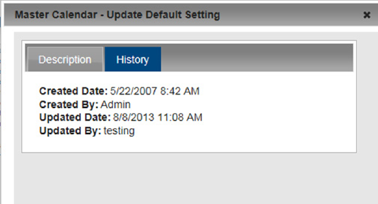

When the Master Calendar application is initially installed, it is installed with defaultsettings, which determine how the system is to be used. For example, some default settings include Max number of events/day to display in daily view, Max number of events/day to display in monthly view, Default Calendar Display, and so on. As the site administrator, you can change these settings to better meet your organization’s business needs. You can also generate a Default Settings List report and you can view the history for a default setting.
1. On the Admin menu, point to Site Administration > Default Settings. The Default Settings page opens. All the default settings for Master Calendar with their current values are displayed on this tab.
See Also: Default Page Configuration Settings, for a complete list of default settings, their description, and default values.

2. Optionally, to refine this list, on the Area dropdown list, select the area in Master Calendar for which you are changing the default settings. The Default Settings page is refreshed to show only those default settings for the selected area.
3. Click the default setting for which you are changing the value or viewing the history. The Master Calendar Update Default Setting dialog box opens. This dialog box has a Description tab, which is open by default, and a History tab. The Description tab shows the description for the default setting and its current value.
4. Do one of the following:
• Click Save to save the new value for the default setting. The dialog box closes and you return to the Default Settings page, with the new value for the default setting appearing on the page.
• To view the history for the default setting, click the History tab to open it. The history for a default settings consists of the original creation date of the setting, the name of the user who created the setting, and the last date that the setting was edited as well as the name of the user who last edited the setting.

You can generate a Default Settings List report, which lists the current values for the default settings in Master Calendar. You can generate a report that lists the current values for all your default settings, or you can generate a report that lists the current values for a selected area of default settings (Calendar, Email, Labels, and so on).
1. On the Admin menu, point to Site Administration > Default Settings. The Default Settings page opens. All the default settings for Master Calendar with their current values are displayed on this tab.
2. Do one of the following:
• If you are generating a Default Settings List report for all active default settings in your Master Calendar, click Print.
• If you are generating a Default Settings List report for a specific area in Master Calendar, select the area on the Areas dropdown list, and then click Print.
An onscreen preview of the Default Settings List report opens in its own window. From this preview, you can search report results, print the report in its entirety, print the currently displayed report page, and export the report to a file (and save the file).
 | Note: PDF is the default format for exporting to a file. Other allowed formats are Xls, Xlsx, Rtf, Mnt, Text, Image, and Csv. |

See Also: Managing Default Settings for Master Calendar